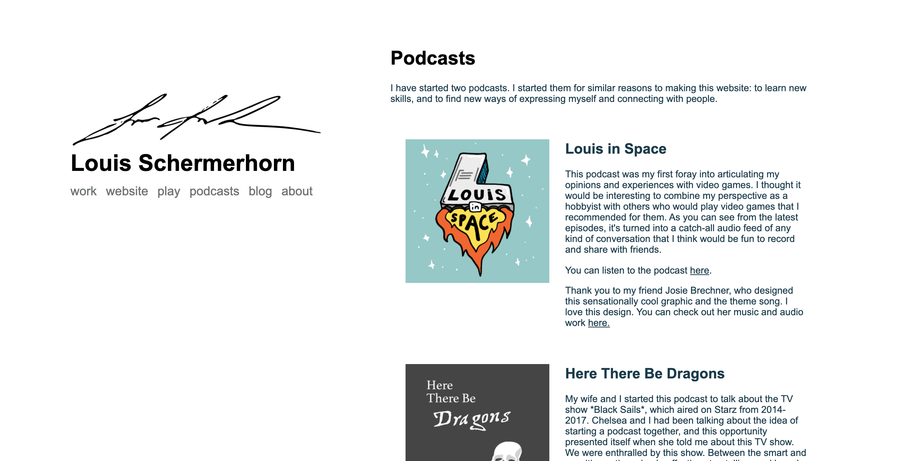
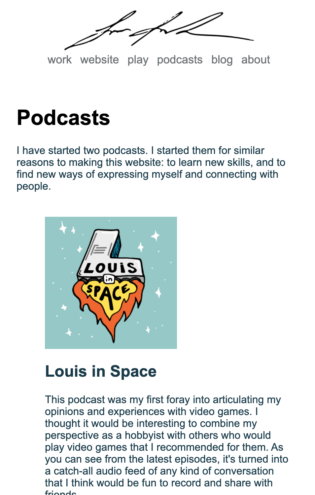

Finishing the podcast page
Written
Website
Written
Website
Now that I have the mobile responsiveness all set, it seems I'm on to the task of actually building out each page.
For the past two days I've been focusing on the podcasts page. Right now, I want this to be a page where you can learn that I have made podcasts, read more about them, see the artwork, and link out to listen to them in Apple Podcasts.
I started off trying to build a layout involve text and images using divs, but eventually remembered that tables existed. I think this is the best way to neatly organize the text and images, but I suspect I'll find this unwieldy as I learn more about HTML and CSS. For now, the page looks good.
The mobile responsive view wasn't broken, exactly, but I don't think it was the ideal layout. The table squeezed the text into a smaller space and it bothered me.
I solved by creating another image inside the table cell with the text that's hidden on the wider window view. As the window shrinks horizontally, the main image disappears and the "mobile" one becomes visible again. It looks good, but I also wonder if there's an inefficiency here having images loaded in two places.
